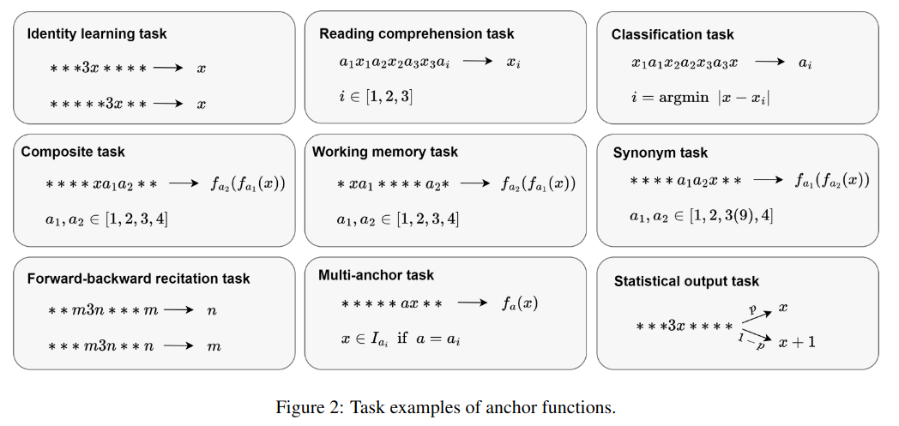
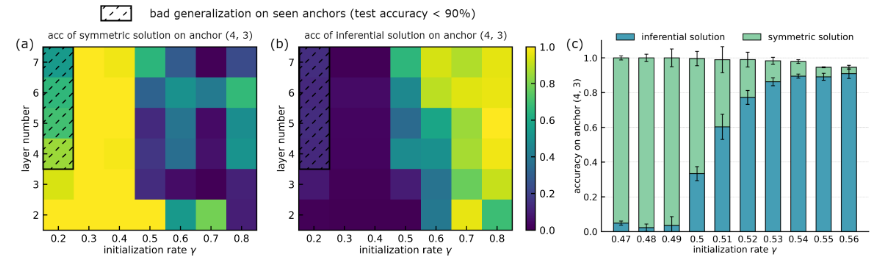
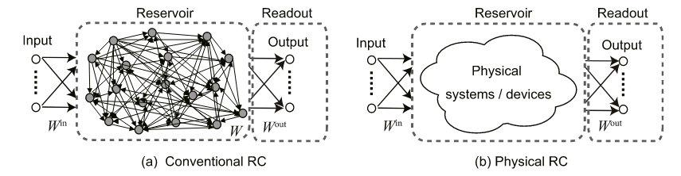

参加杨东平老师在之江实验室举办的大语言模型研讨会议，从物理、神经计算、生物等方面理解和看待语言模型以及神经网络的发展。
Introduction

侧向预测编码
参考文献： * Discontinuous phase transition of feature detection in lateral predictive coding * Energy-information trade-off induces continuous and discontinuous phase transitions in lateral predictive coding
什么是lateral predictive coding？
通过观察同一层网络相互之间的关系，从而对自身进行预测，将预测结果与自身对照，产生误差，对误差进行回传。对于同一层的不同变量记为xil，误差ϵil = xil − f(xil)，通过Bottom-up（类似于反向传播）的方式优化。引入lateral predictive coding的目的在于可以减少冗余，如果一个网络大部分内容可以预测（ϵ = 0），那么很多的信息就是无用信息。
这是一个用lateral 方案对MNIST数据集进行预测的例子： 1
2
3
4
5
6
7
8
9
10
11
12
13
14
15
16
17
18
19
20
21
22
23
24# ==== LPC 模拟模型 ====
class LPC_MNIST(nn.Module):
def __init__(self):
super().__init__()
self.linear = nn.Linear(28*28, 256)
self.lateral = nn.Linear(256, 256) # lateral prediction within same layer
self.classifier = nn.Linear(256, 10)
def forward(self, x):
x = x.view(x.size(0), -1) # 展平
# 主激活
h = torch.relu(self.linear(x)) # shape: (B, 256)
# 侧向预测（当前层内部）
h_detached = h.detach() # 假设 lateral 连接不能访问当前梯度
h_pred = self.lateral(h_detached) # h_i ≈ f(h_j≠i)
# 预测误差
error = h - h_pred
# 用预测误差作为表征送入分类器
out = self.classifier(error)
return out, error
理论框架
将LPC写为动力学过程： $$ \begin{align} \frac{d \bf x}{d t} = \bf s -\bf x - \bf W \bf x \end{align} $$ 其中$\bf s$是输入向量，$\bf x$可以认为是预测误差。稳定解为：$\bf x=(\bf I+\bf W)^{-1}\bf s$。
将预测误差和定义为能量： $$\begin{align} E\,\equiv\,\sum_{i=1}^{N}\Bigl\langle\bigl|x_{i}\bigr|\Bigr\rangle\,=\,\sum_{i=1}^{N}\Bigl\langle\Bigl|\sum_{j=1}^{N}\bigl(\frac{I}{I+W}\bigr)_{i j}s_{j}\Bigr|\Bigr\rangle \end{align}$$
熵为（文章的补充材料中有证明）： $$\begin{align} S=-\log\bigl[\operatorname*{det}(I+W)\bigr] \end{align}$$
以熵作为输出信息的复杂度，从自由能和能量竞争的理论出发，发现lateral编码会出现非连续相变，或许进一步揭示了lateral predictive coding的潜在运行机制。
核心思路是，定义能量，并且通过随机矩阵计算熵的表达式，通过自由能最小化的方式，用温度调控两者的分布
大模型机理分析——数据合成与慢思考机制
刘勇老师研究LLM如何进行思考，从泛化上界的视角研究MCTS提升模型能力的原理。
我的思考是，如何把多智能体的想法和泛化上界相结合，通过证明把人类的经验总结进prompt会提升模型的表达能力。
通过凝聚现象理解语言模型的推理与记忆
参考文献： - Initialization is Critical to Whether Transformers Fit Composite Functions by Reasoning or Memorizing - ANCHOR FUNCTION: A TYPE OF BENCHMARK FUNCTIONS FOR STUDYING LANGUAGE MODELS
通过设计精巧实验(称为 anchor function)，分析不同初始化方法下，模型产生的记忆与推理两种模式。
Anchor function
One-anchor function
考虑函数 f(X) : ℝn × d → ℝd ，n是输入信息的长度，d是tokens的长度，X = (x1, x2, x3⋯xn)并且xi ∈ ℝd。有如下的映射关系： $$\begin{align} f(\mathbf{x_1}, \mathbf{x_2}, \mathbf{x_3}\cdots\mathbf{x_n}) = \mathbf{x_{i+1}}\quad \text{where}\quad x_i =a \end{align}$$
例如对于d = 1维、a = 3的情况下f(12, 33, 14, 3, 42, 54, 34, 20, 28) = 42。其中a = 3是一个钩子，找到序列中对应的位置，然后给出后一个位置的结果。可以得到一个更加普适的函数： $$\begin{align} f(\mathbf{x_1}, \mathbf{x_2}, \mathbf{x_3}\cdots\mathbf{x_n}) = g(\mathbf{x_{i+1}})\quad \text{where}\quad x_i =a \end{align}$$ 其中𝕩𝕚为钩子(anchor)项，对应的𝕩𝕚 + 𝟙是钥匙(key)项。
Two-anchor composite function
Anchor 集为一系列不同的token，例如A = {a1, a2, ⋯, aJ}，输出函数为g(𝕩; ak)。在每一个输入的序列中，有且仅有一对连续元素属于A： $$\begin{align} f(\mathbf{x_1}, \mathbf{x_2}, \mathbf{x_3}\cdots\mathbf{x_n}) = g(g(\mathbf{x_{i-1}};\mathbf{x_{i}});\mathbf{x_{i+1}})\quad \text{where}\quad x_i,x_{i+1} \in A \end{align}$$
可以得到以下集中任务分类： 
Experiment
上图是实验示意图，输入包含三个部分：anchor项（黄色）、key项（橙色）、噪声项（灰色），输出为目标结果。anchor项是与众不同的，这个实验中为1, 2, 3, 4，并且每一种anchor表示对key项的一个操作。一共有用16种组合，其中15种项是在训练过程中作为输入集，并且这里面有14个是可以通过推理得出的，(3, 4)这个组合只能通过记忆得出，一组(4, 3)用于测试。这组测试anchor会给出三种可能的结果，一种是学习到对称性给出和(3, 4)一样的解，一种是学习到推理解，以及其它非推理解。
通过实验发现，解的类型和初始化参数、网络深度有关，通过设置超参γ调控不同的学习模式，1/dinγ是每层参数的标准差，其中din是输入神经元数目。

从实验中可以发现，存在一个明显的分界线，在不同的超参下识别的结果存在明显的分别。可能的解释是，在方差较小的时候，参数变化小，因此需要学习推理的内容；当方差变大模型可以学习更多的内容，因此参数倾向于记忆内容；方差进一步增大，模型会记忆更多内容，正确率下降。
从以下几个方面分析模型学习到不同策略的原因： * 信息流 * 信息在向量空间的表示 * 不同观点下的模型复杂度
上面是从信息流动的角度分析，浅层的网络对于信息处理起到了重要的作用。(a)(b)图分析了对称解的情况，浅层网络将anchor映射到一组位置，然后将key表示在这个结果上；在图(b)中通过t-SNE降维的方法，将不同anchor得到的结果降维，发现能够很好分类。图(c)是推理的结果，显示会先把key映射到对应的anchor上然后进行处理。
上图是度量cosine相似度的热力图。图(a)是推理的结果，红框表示是相同的输出结果，可以发现，其具有很高的相似度；图(b)是对称的结果，基本没有相似性。这样显然的区别，表明模型推理能力和结构有关。为了进一步验证这个猜想，设计one-anchor的实验（图c），发现模型确实在推理的结果上表现相似。
上图(a)(b)是计算参数的权重Wcosin距离的热力图，其中图(a)表示推理的结果，可以看到出现明显的方向性，图(b)是对称解，并没有明显的方向性，复杂度柔和进模型中。图(c)(d)为t-SNE之后的embedding结果，图(c)为推理解有明显的方向，相比之下对称解图(d)显得杂乱。
深度学习机理的动力学分析
赵鸿老师通过自己的方式，从数据和参数层面，分析神经网络的相关性质，很物理也很有趣。
储备池计算
参考文献： * Recent advances in physical reservoir computing: A review
储备池计算（Reservoir Computing），就是通过非线性的动力学过程将数据特征升至高维时间空间中，从而完成特征提取。
 上图是储备池计算的示意图，在a图中输入权重Win与动力学参数W是固定参数，不参与训练。只训练读出头部分Wout。
大语言模型的训练
陈星强和吴生礅在进行大模型的训练，通过unsloth这个包。重复这个工作，找他俩商量聊天，完成这个任务。